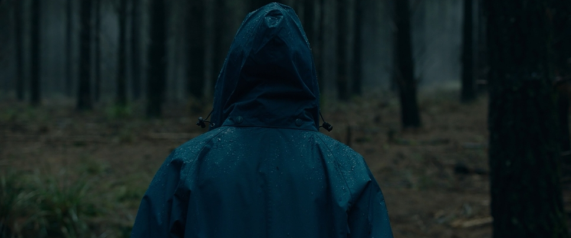

You slowly walk over to your groupmates, taking one last look at the people who you have known for months. You take your own supplies and walk out into the unknown woods. As you walk, you wonder what would have come of your little life left if you had stayed. You walk for a day, the sweating and shaking becoming worse, as you sit down at a tree to rest, you take your last human breath.